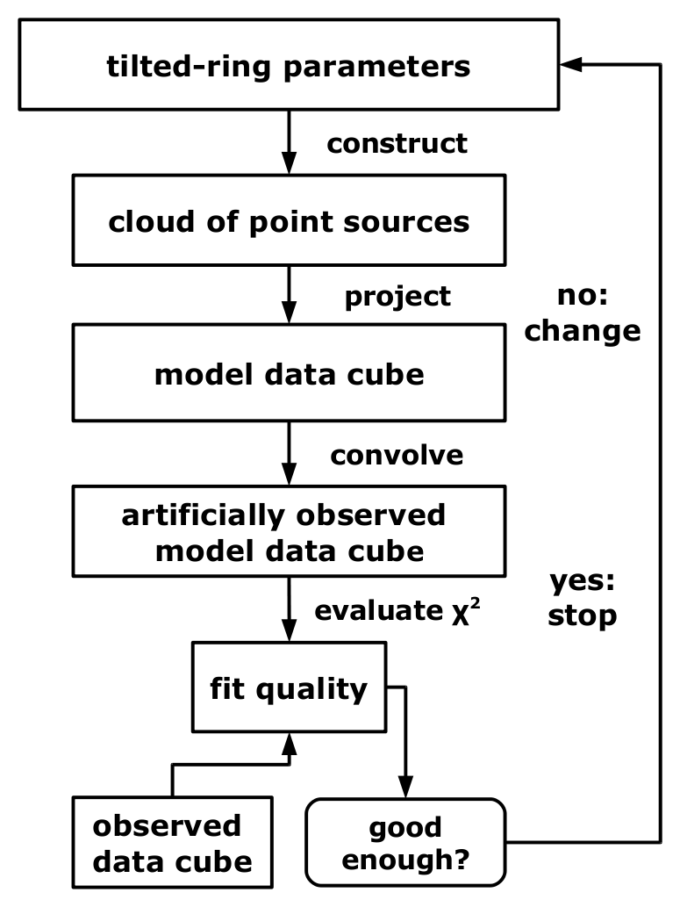

|  | |
| Fig. 1: TiRiFiC model construction and fitting | |
The flow diagram (Fig. 1) to the right shows how TiRiFiC is expanded to enable the user not only to construct simulated observations, but also to automatically adjust model parameters to fit the simulated observation to an input observation.
The difficulty is to implement a minimising algorithm, which is able to converge quickly, dealing with a complex $\chi^2$-landscape with a generally high number of parameters, a limited available amount of model calculations (since, after all optimisation for speed, the construction of one model still takes significantly longer than a µs), and without analytic (partial) derivatives. So far, three of several tested fitting methods yielded acceptable results.
The aim of the fitting process in TiRiFiC is to adjust a subset of the geometrical parameters with the goal to optimise a simulated observation such that the simulated observation optimally matches a real (input) observation. The measure adopted to numerically determine the model quality is the $\chi^2$, altered by defining boundary conditions (minimum and maximum values for a parameter, regularisation schemes). Currently, the TiRiFiC optimisation aims at the minimisation of the $\chi^2$.
As far as possible, the fitting routines in TiRiFiC are kept separate from the model generation. This means that the fitting parameters, passed to the fitting routine are normalised (with a normalisation factor provided by the user through the parameter MINDELTA) to then be varied as dimensionless quantities on a regular grid. The parameters visible to the fitting routine are not necessarily mapped to single geometrical parameters parameters, but the user has the possibility to automatically adjust single geometrical parameters at given radii via linear interpolation between fitted quantities, and to group geometrical parameters to be fitted at the same time, in which case only one representative fitting variable is visible to the fitting routine. In other words, such a fitting group appears to the minimising routine as one parameter and automatically adjusted parameters are not visible at all to the fitting routine. Grouping and interpolation is controled by the the parameters VARY, VARINDX, and INDINTY .
In the following sections, we discuss the $\chi^2$ evaluation including the implementation of boundary conditions altering the $\chi^2$, to then describe the implemented fitting algorithms. Finally, the fitting parameters are described in detail.
As a measure of the quality of a fit, TiRiFiC calculates the $\chi^2$ and with that, in principle, the relative probability of two models. The chisquare calculation before taking into account boundary conditions is determined by the WEIGHT and the RMS parameters. The $\chi^2$ calculates with
\begin{equation} \label{eq_2.1} \begin{split} \chi^2 &= \sum_i \frac{(M_i-O_i)^2}{\sigma_i^2} \\ &= \sum_i \frac{(M_i-O_i)^2}{w_i} \end{split} \qquad, \end{equation}
where $k$ is an index over all pixels, $(M_i)$ is the model data cube and $(O_i)$ the observed data cube, $(\sigma_i)$ the (pixel-dependent) noise, and $(w_i)$ the corresponding weighting function. If no quantisation noise is assumed, then
\begin{equation} \label{eq_2.2} \begin{split} \sigma_i &= \sigma_\mathrm{rms} \\ &= \mathrm{RMS} \end{split} \qquad, \end{equation}
$\sigma_\mathrm{rms}$ is the rms noise in the original datacube and asked for with the parameter RMS in the same units as the input data cube ${\rm Jy}\,{\rm beam}^{-1}). As the model data cube is the result of a Monte-Carlo integration and before gridding consists of discrete point sources, this assumption is not true and we have to set
\begin{equation} \label{eq_2.3} \begin{split} w_i &= \sigma_\mathrm{rms}^2+(\sigma^\mathrm{q}_i)^2\\ &= \mathrm{RMS}^2+(\sigma^\mathrm{q}_i)^2 \end{split} \qquad, \end{equation}
$\sigma^\mathrm{q}_i$ being the (pixel-dependent) quantisation noise. $\sigma^{\rm q, u}_{i}$, the quantisation noise evaluated for a pixel with the index $i$ containing $n_i$ pointsources of total flux CFLUX (specified by the user) in the model cube ($m^{\rm u}_i$) before convolution, is given by
\begin{equation} \label{eq_2.4} \begin{split} \sigma^{\rm q, u}_{i} &= \sqrt{n_i}\cdot \mathrm{CFLUX}\\ &= \sqrt{\frac{m^{\rm u}_i}{CFLUX}}\cdot \mathrm{CFLUX}\\ &= \sqrt{m^{\mathrm{u}}_i\cdot \mathrm{CFLUX}} \end{split} \qquad. \end{equation}
If $(g_i)$ is the discretised version of the instrumental convolution kernel (a 3D Gaussian), then the quantisation noise $\sigma^\mathrm{q}_i$ in the convolved map is given by
\begin{equation} \label{eq_2.5} \begin{split} \sigma^\mathrm{q}_i &= \sqrt{\sum_j g^2_j\cdot({\sigma^\mathrm{q, u}_{i-j})^2}}\\ &=\sqrt{\sum_j g^2_{j}\cdot({m^\mathrm{u}_{i-j})^2}\cdot\mathrm{CFLUX}} \end{split} \qquad, \end{equation}
which is equivalent to a convolution with a convolution with a Gaussian of with an increased dispersion by a factor of 21/2 in every direction (not taking into account the normalisation). TiRiFiC can hence calculate the weight map
\begin{equation} \label{eq_2.6} \begin{split} w_i = \sigma^2_\mathrm{rms}+(\sigma^\mathrm{q}_i)^2 \end{split} \qquad, \end{equation}
to perform a $\chi^2$ evaluation taking into account quantisation noise. It is, however, a larger computational effort to do so, and the user might be inclined to modify the goodness-of-fit evaluation, which is why in TiRiFiC we introduce the weight parameter WEIGHT, to calculate the weight map following the equation
\begin{equation} \label{eq_2.7} \begin{split} w_i = \frac{\sigma^2_\mathrm{rms}\cdot \mathrm{WEIGHT}^2+(\sigma^\mathrm{q}_i)^2}{\mathrm{WEIGHT}^2} \end{split} \qquad, \end{equation}
An input of a vanishing weight parameter (WEIGHT = 0.0) is interpreted as WEIGHT$=\infty$, meaning that the weight map has the constant pixel values $\mathrm{RMS}^2$. In this case it will not be calculated resulting in a higher computing speed. If set to 1.0, the correct noise will be evaluated, including the quantisation noise. We kept the parameter to be variable between the two discrete cases to give the user a weighting scheme at hand. With an increasing weight parameter, the emphasis will be more and more taken away from the high-quantisation-noise (and high emission) regions towards the regions of low emission.
Again, specifying a nonzero WEIGHT parameter instructs TiRiFiC to perform two convolutions per model calculation (one for the model itself, one for the weight map), requiring 1.5 times to 1.7 times the amount of reserved memory. The user might therefore be inclined to estimate the quantisation noise before he or she includes the quantisation noise in the $\chi^2$ calculation. This is possible by constructing, without fitting, a model that consists of the input model disk(s) and in addition a further disk for which the surface brightness is chosen to be the negative of the surface brightness of the originally intended model. With that, one subtracts a model from exactly the same model, which is however generated using different random-numbers. Hence, the result is a data cube with quantisation noise only, enhanced by a factor of $\sqrt{2}$.
Notice that, to provide a good approximation of the quantisation noise, it is required that the point source flux is approximately the same for all point sources of the model. This condition is violated, if the user specifies different cloud fluxes for different disks. The parameters CFLUX and CFLUX_i (i = 2, 3, ...) should therefore have the same value, if with non-vanishing WEIGHT parameter the quantisation noise is taken into account in the $\chi^2$ evaluation.
Boundary conditions to a TiRiFiC model are user-defined methods to influence the structure of a best-fit model by providing priors. In TiRiFiC, these boundary conditions are implemented by increasing the $\chi^2$ before it is passed to the minimising algorithm. The user has the possibility to i) penalise a model extending (partly) beyond the input data cube, ii) regularise the solution by penalising user-defined harmonic amplitudes, iii) provide minima and maxima to the fitting parameters. We will discuss the implementation of these possibilities here.
Suppressing outliers: TiRiFiC constructs a cloud of point sources, which may (partly) fall out of the boundaries of the (input) data cube. Pointsources falling outside the data cube boundaries shall be called outliers. Without taking any measures, outliers are not included in the chisquare evaluation. In principle, especially if the user wants to analyse a marginally detected disk, this may lead to the effect that a numerically favourable solution (with a lower $\chi^2$) consists of shifting the model outside the data cube. Any optimisation algorithm will then provide exactly this, probably unwanted, solution. To optionally prevent this effect, the parameter PENALTY is introduced in TiRiFiC. TiRiFiC counts the number of pointsources that lie outside the data cube. Each of those pointsources is then treated roughly like a pointsource for which the input datacube has a value of 0, and for which no other pointsources occupy the same pixels. By default this means that for every outlier a value
\begin{equation} \label{eq_2.8} \begin{split} \Delta\chi^2 &= \mathrm{CFLUX}\cdot\sqrt{\frac{\pi}{2}}\cdot\frac{\sigma^2_\mathrm{maj}\cdot\sigma^2_\mathrm{min}}{\sigma_\mathrm{rms}}\\ &=\mathrm{CFLUX}\cdot\sqrt{\frac{\pi}{2}}\cdot(\ln{256})^{-1}\cdot\frac{\mathrm{BMAJ}^2\cdot\mathrm{BMIN}^2}{\mathrm{RMS}^2} \end{split} \qquad, \end{equation}
with $\sigma_\mathrm{maj}$ and $\sigma_\mathrm{min}$ being the dispersions of the spatial part of the instrumental convolving function, is added to the $\chi^2$. As this is in any case an estimate, the quantisation noise is not taken into account in this calculation . By setting the parameter PENALTY, the user controls this requirement to the model via
\begin{equation} \label{eq_2.9} \begin{split} \Delta\chi^2 &= \mathrm{PENALTY}\cdot\mathrm{CFLUX}\cdot\sqrt{\frac{\pi}{2}}\cdot\frac{\sigma^2_\mathrm{maj}\cdot\sigma^2_\mathrm{min}}{\sigma_\mathrm{rms}}\\ &=\mathrm{PENALTY}\cdot\mathrm{CFLUX}\cdot\sqrt{\frac{\pi}{2}}\cdot(\ln{256})^{-1}\cdot\frac{\mathrm{BMAJ}^2\cdot\mathrm{BMIN}^2}{\mathrm{RMS}^2} \end{split} \qquad, \end{equation}
If for an example the user does not wish to influence the fitting process by penalising outliers, then the user sets PENALTY 0. If the user wants to suppress outliers at any cost, then the user choses PENALTY to be 100000 or 100000000 (maybe even 100000001). Usually, a model converges quite quickly to resemble an observed disk, also without specifying a non-zero PENALTY, but it is recommended to keep PENALTY = 1.
Regularisation via harmonic components: the tilted-ring model is a highly idealised model of a disk appearing in nature, e.g. a galactic disk. Therefore, it occasionally happens that, while a tilted-ring model with a well-defined $\chi^2$-minimum in parameter space can be found, it appears as an unphysical solution. An example is a best-fit solution in which the rotation curve shows small-scale periodic variations. Apparently, in this best-fit solution the tilted-ring model is optimised to include surface-brightness- or local velocity variations that are not inherent to the tilted-ring model (e.g. holes or expanding shells in dwarf galaxies are notorious to have such an effect). One way to address this issue is to try to include these variations in the model, another way might be to enforce a smoother, more "physical" solution by penalising such variations. In TiRiFiC, a first attempt to address the issue is made by giving the user the possibility to suppress higher-order harmonics in the parametrisation. So far, this did not prove a very successful method, while it has also not been tested very much. For completeness, and to encourage the interested reader to experiment, we describe the implemented method here, while other possibilities for a regularisation will be implemented in the future.
Any given radially dependent parametrisation $\{\mathrm{PAR}(\mathrm{RADI}_j)\}_{j=1,..., m}$ at given nodes (rings) $\{\mathrm{RADI}_j\}_{j=1,..., m}$ provided by the user or changed during the fitting process (see section Radial nodes and parameter discretisation) can be transformed into a (finite) Fourier series
\begin{equation} \label{eq_2.10} \begin{split} \mathrm{PAR}(\mathrm{RADI}_j = a_0+\sum_{k=1}^{\lfloor{\frac{m}{2}}\rfloor} a_k\cdot \cos{\frac{2\pi k j-\alpha_k}{m}} \end{split} \qquad, \end{equation}
The $\lfloor \rfloor$ operation has the meaning of rounding down. If $m$ is even, then the highest order phase $\alpha_{\lfloor \frac{m}{2}\rfloor}$ is necessarily 0, such that any number of m parameters has always the same number of amplitude-phase combinations in the corresponding Fourier decomposition. A high frequency variation of a parameter series will lead to a higher value of the highest order amplitude $a_{\lfloor \frac{m}{2}\rfloor}$ in the Fourier decomposition. The idea to regularise the fitting process and hence to suppress such wiggles in the fitting process is to penalise high order (or user-chosen) amplitudes above a certain value in the Fourier decomposition of a radially dependent paramter series. This is the principle behind the currently implemented regularisation scheme offered in TiRiFiC.
With the parameter REGPARA, the user specifies a (comma-separated) list of radially dependent parameters (syntax) that are foreseen for a regularisation. Any subset of the radially dependent parameteters described in the section Model geometry can be specified. If the model has of a number of NUR ($= m$) nodes (rings), then for each radially dependent parameter group $\{\mathrm{PAR}(\mathrm{RADI}_j)\}_{j=1,..., m}$ a subset $\{\mathrm{PAR}(\mathrm{RADI}_l)\}_{l\in S}$, with $S \subseteq\{1, ..., m\}$ of the complete number of parameters $\{\mathrm{PAR}(\mathrm{RADI}_j)\}_{j=1,..., m}$ can be chosen. This subset of paramters is then transformed to a set $\{\mathrm{PAR^\prime}(\mathrm{RADI}_j)\}_{j=1,..., m}$, with the "missing" parameters calculated via linear interpolation. After that, the series $(\mathrm{PAR}_j)$ is Fourier-tranformed to calculate the Fourier amplitudes $\{a_k\}_{k = 0, ..., \lfloor \frac{m}{2}\rfloor}$. The user has now the possibility to define two sets of orders (indices) of Fourier amplitudes per parameter group specified with REGPARA to define a ratio r of (sums of) Fourier amplitudes. The amplitudes with the orders entered with the keyword REGDENO are summed up to build a denominator, the amplitudes with the orders entered through the keyword REGNUME are summed up to become the numerator of that ratio. Alternatively, a constant denominator can be specified with the keyword REGAMPD. Assuming that the user specifies the highest-order amplitudes for the numerator (e.g. $\lfloor \frac{m}{2} \rfloor$ only), and all available order amplitudes or a constant number for the denominator, the ratio r is a measure of the strength of the highest-frequency variations of the given parameter with radius, compared to all other Fourier amplitudes or to a fixed number. Following the remarks above, it is possibly desirable to suppress these highest modes by penalising a high ratio r in the fitting process. The user defines per parameter group given in REGPARA a threshold REGTHRE through a list passed with the parameter REGTHRE, a width REGWIDT through the list REGWIDT, an amplitude REGAMPL with the list REGAMPL, and an increment REGASTE for the amplitude per fitting loop (the number of repetitions of a fitting process) with the list REGASTE. Then, an increment $\Delta \chi^2$, to be added to the $\chi^2$ is calculated via
\begin{equation} \label{eq_2.11} \begin{split} \Delta\chi^2=\left\{\begin{array}{llll} 0 &,& r \leq \mathrm{REGTHRE} \\ \frac{(r - \mathrm{REGTHRE})\cdot(\mathrm{REGAMPL} + loops\cdot\mathrm{REGASTE})}{\mathrm{REGWIDT}}&,& \mathrm{REGTHRE} < r < \mathrm{REGTHRE}+\mathrm{REGWIDT} \\ \mathrm{REGAMPL}+loops\cdot \mathrm{REGASTE} &,& \mathrm{REGTHRE}+\mathrm{REGWIDT}\leq r\end{array}\right. \end{split} \qquad\mathrm{, with} \end{equation}
loops being the number of finished fitting loops. With that, the user has the possibility to increasingly penalise high-frequency variations in a parametrisation. The syntax is discussed below.
Minima and maxima for fitting parameters: minima and maxima for fitting parameters are defined in the context of parametrising the fitting process (see see here). The very simplistic approach is to multiply the $\chi^2$ after taking into account outliers by a factor of OUTRANGEFAC whenever a parameter leaves the specified range between the user-specified values PARMAX and PARMIN during a fitting process. The factor OUTRANGEFAC is currently hardcoded to be 10.0. On request (should be well motivated), we can introduce a corresponding input parameter into TiRiFiC.
While a small number of fitting methods have been tested, no ideal solution has been found yet. As mentioned above, TiRiFiC would ideally use a fast global minimum search algorithm which is able to cope with a large number of parameters, a complex $\chi^2$ landscape, the absense of analytic derivatives, which would also be able to deliver a cross-correlation matrix and statistical errors. Any suggestions to approach a solution to this issue, the more concrete (even coded suggestions..?) the better, are highly welcome. The currently implemented minimising algortithms are working locally only and do not provide any statistical error estimates (which, however, are only expected to be relevant for marginally resolved objects, where the statistical errors dominate over the deviations of the observed objects from the tilted-ring symmetry). Currently, a quite rough initial guess, followed by a user-controlled sequence of automated minimisations, mostly lead to a reasonable result. We are working on three ways to solve the issue, wrapping such a sequence into a completely automated process using the currently implemented minimisation algorithms, testing alternative minimisers, and reducing the number of parameters by providing functional forms of the single parameters.
With the keyword
Generic approach for minimum-finders: with the exception of the golden-section algorith with FITMODE 1, the approach for the minimum finders is generalised (which is a slightly too big word, given that three minimisers are implemented; but more will follow).
A TiRiFiC minimum finder is provided with a set of fitting parameters as specified by the keywords VARY and VARINDX. Each fitting parameter as seen by the minimum finder is a representative of a fitting group of geometrical parameters of the TiRiFiC tilted-ring model, normalised by a factor which is provided with the keyword MINDELTA, and with start values mapped to the origin of the fitting grid. While the fitting parameters are tied to different physical quantities, and hence a change of their numerical values of can have a quite different effect, the minimising algorithms hence see (depending on the sensible choice of MINDELTA by the user) all fitting parameters on roughly the same scale, with the input fitting parameters mapped to the origin of the fitting grid (if the physical value is the one provided with MINDELTA, the fitting algorithm sees "1").
Any minimising algorithm in TiRiFiC will move through a number of iterations of models to finish a loop of iterations, after which it will then start the next loop, until a stopping condition is meat. The definition of an iteration and a loop is different from minimising algorithm to minimising algorithm, and will be specified in detail in the description of the single minimisers. In TiRiFiC, the user specifies the maximum number of loops with the keyword LOOPS, the maximum total number of iterations with the keyword MAXITER, and the maximum number of model calculations per iteration with the keyword CALLITE (only relevant for FITMODE = 2), thus defining boundary stopping conditions for the minimisers.
The currently implemented fitting algorithms are local search algorithms, which require a search direction. This is provided through the keywords MODERATE, DELSTART, and DELEND. With DELSTART, the user provides a search direction or a start stepwidth for each fitting parameter at the beginning of the first loop. With MODERATE the user provides for each parameter the number of loops, for which the start stepwidth (start direction) varies linearly between the start stepwidths DELSTART and DELEND. Starting with loop number loop = 1, the start stepwidth $sw$ in each loop for each fitting parameter is given by
\begin{equation} \label{eq_2.12} \begin{split} sw=\left\{\begin{array}{llll} \mathrm{DELSTART}+(loop-1)\cdot\frac{\mathrm{DELSTART}-\mathrm{DELEND}}{\mathrm{MODERATE}}&,& loop < \mathrm{MODERATE} \\ \mathrm{DELEND} &,& loop > \mathrm{MODERATE}\end{array}\right. \end{split} \qquad, \mathrm{such\,that} \end{equation}
the final start step width provided in DELEND for each loop is reached after MODERATE+1 loops. Internally, the start step widths are normalised using the normalisation as provided by MINDELTA, but the user provides them in the same units as the geometrical parameters. Again, with MODERATE the user specifies an interpolation interval for the start stepwidth in loops for each fitting parameter.
Each TiRiFiC minimiser (with the exception of the golden-section algorithm with FITMODE 1) calculates a "size" of the current iteration process. A stopping condition (for a loop) is given by the minimum size in units of the grid specified with the parameter MINDELTA. This minimum size is provided by the single number SIZE. Whether after meeting the stopping condition the algorithm continues with fitting or not depends on the specific minimising algorithm.
Golden-section method: the golden section algorithm (see e.g. Press et al. 1992, chap. 10.1, page 397) is a simple way to find a local minimum in parameter space, originally thought for a minimum search in one parameter only. In TiRiFiC, we implement what most text books expressively advise against (see e.g. Press et al. 1992, chap. 10.5, page 412), a sequential fitting of all fitting parameters making use of the golden-section method. In TiRiFiC, this algorithm is selected with choosing FITMODE 1 or FITMODE 2. With FITMODE 2, the algorithm is embedded as a generic minimiser, with FITMODE 1 a former concept is kept, mainly to provide consistency with former versions of TiRiFiC.
Sequentially, a nested intervals minimisation of the $\chi^2$ is performed for each parameter, to either stop when all parameters have been iterated, or to start the process again with the first fitting parameter. A series of iteration processes for all specified parameters is being referred to as a loop. In a nested-intervals iteration, the stepwidth is varied by changing the search direction and/or multiplication with a factor. Defining $w = \frac{3-\sqrt{5}}{2}$, this factor is given by $\frac{1-w}{w} \approx 1.62$ when enlargening the stepwidth or by $\frac{w}{1-w} \approx 0.62$ when reducing the stepwidth. The start step width for each loop and each fitting parameter is controlled by the keywords MODERATE, DELSTART, and DELEND (see sections Fitting parameters and Generic approach for minimum-finders).
The user has various possibilities to define a stopping condition for the minimum search and controlling its accuracy. On the level of the iteration process for a single fitting parameter, two conditions are provided to switch to the next fitting parameter. First, the user specifies the maximum number of steps (model calculations) for each nested intervals process (minimising the $\chi^2$ for one fitting parameter, with the keywords MODERATE, ITESTART, ITEEND if FITMODE 1, with the keyword CALLITE if FITMODE 2). In the case of FITMODE 1, the maximum number of models generated in an iteration is calculated in the same matter as the start stepwidths (see Generic approach for minimum-finders). Second, the user specifies a minimum stepwidth at which the algorithm steps out of the nested-intervals process for the current fitting parameter. This minimum stepwidth is provided by the user with the parameter list MINDELTA.
At the end of each iterative nested-intervals process for each parameter, the algorithm checks, whether it is
still "satisfied" with the results. The minimising algorithm will not be satisfied, if it
has not been before. If is has been satisfied, it will stay so, if
i) the maximum number of iterations (models) for a parameter have been reached (only for FITMODE 1),
ii) the parameter hasn't changed by more than an absolute value (list SATDELT if FITMODE 1, MINDELTA times SIZE if FITMODE 2)
with respect to it's value at the start of the iterative process in each loop. Hence, for FITMODE 2, the size is the maximum absolute deviation of the fitting parameters, normalised with the values given in the list MINDELTA, from the values derived in the previous loop. To use the size as a stopping condition for FITMODE 2, the number of loops LOOPS has to be greater than 2.
If the golden section algorithm encounters a situation where at the end of a loop it is still satisfied, it stops iterating and returns with the current solution for the fitting parameters as the minimum position. If it is not satisfied, the satisfaction flag will be set again to "satisfied", and a new loop is started, until the number LOOPS of loops is reached or until the algorithm is satisfied at the end of a loop. As mentioned above, for FITMODE 2 a further stopping condition is defined by defining the maximum number of model calculations with the parameter MAXITE. Please note that FITMODE 1 is deprecated and currently being kept for consistency with older TiRiFiC versions, and will be removed at some point.
The simplex algorithm: with FITMODE 3, the user chooses a variant of the Nelder-Mead (1965) downhill simplex algorithm as a minimiser, as implemented in the GNU scientific library (GSL) (method: gsl_multimin_fminimizer_nmsimplex2). All fitting parameters enter the algorithm as described in the section generic minimisers. The general simplex technique is well described in Press et al. 1992 (chap. 10.4, page 408) and based on the principle to evaluate a function at the vertices of a simplex (a multidimensional triangle), then iteratively shrinking and moving the simplex as better points are found until the size of the simplex is below a given size. For the specific implementation in the GSL, we refer to the description of the implemented GSL library function.
Specific to the algorithm is the definition of the size. After normalising with the with the values given in the list MINDELTA, the size of the simplex is given by the root mean square (rms) of the distances between the vertices of the simplex and its barycenter. Thus, if SIZE 1, the single parameters are on average (rms) minimised to an accuracy given by the values given in the list MINDELTA. The starting point of the algorithm is a simplex with the vertices
(0, 0, ..., 0), (sw1 MINDELTA-11, 0, ..., 0), (0,sw2 MINDELTA-12, ..., 0 ), ..., (0, 0, ..., swn MINDELTA-1n),
\begin{equation} \label{eq_2.13} \begin{split} (0, 0, ..., 0), (\frac{sw}{\mathrm{MINDELTA}_1}, 0, ..., 0), (0, \frac{sw}{\mathrm{MINDELTA}_2}, 0, ..., 0), ..., (0, 0, ..., (\frac{sw}{\mathrm{MINDELTA}_n}), \end{split} \qquad, \end{equation}
where $sw$ is given in eq. (12), and MINDELTAi is the normalisation given in the parameter list MINDELTA. The parameter CALLITE is ignored for this minimisation mode, since an iteration is ill (not) defined. A loop is a complete minimisation run, and the number of loops given by the parameter LOOPS is the number of repeated iterations, no stopping condition applies to step out of the minimisation process before that number of loops has been performed. For each loop, the results from the previous loop are adopted as the initial guess.
PSwarm: PSwarm is a global optimisation solver by A.I.F. Vaz and L.N.Vicente. A description can be found on the PSwarm home page. For the use with TiRiFiC, the C implementation of the code has been adopted and adjusted to be linked into the minimising framework of TiRiFiC. We do not make use of linear constraints and the initial grid size is calculated automatically, based on a normalisation to MINDELTA the starting size is calculated automatically, see PSwarm for a description. The following parameters do not have any meaning for PSwarm minimisation within TiRiFiC:
ITESTART
ITEEND
SATDELT
DELSTART
DELEND
MODERATE
The following additional parameters are valid only for the PSwarm minisation (see PSwarm home page):
| Name | Category | Unit | Description |
| PSW_PSSE | Fitting (default 42) | PSWARM seed | |
| PSW_PSNP | Fitting (default 42) | PSWARM number of particles | |
| PSW_PSCO | Fitting (default 0.5) | PSWARM cognition parameter | |
| PSW_PSSO | Fitting (default 0.5) | PSWARM social parameter | |
| PSW_PSMV | Fitting (default 0.5) | PSWARM maximum velocity | |
| PSW_PSNF | Fitting (default 8000) | PSWARM number of function evaluations to go from initial weight to final weight | |
| PSW_PSII | Fitting (default 0.9) | PSWARM initial weight | |
| PSW_PSFI | Fitting (default 0.4) | PSWARM final weight | |
| PSW_PSID | Fitting (default 2.0) | PSWARM increase delta | |
| PSW_PSDD | Fitting (default 0.5) | PSWARM decrease delta |
Future minimisers: The next logical step to further TiRiFiC is a move towards MCMC techniques to map out the $\chi^2$-landscape. This is work in progress.
It is possible to blank and ignore single pixels in the goodness-of-fit evaluation. In the standalone version, pixels which have a value of NaN (standard blanked pixels in FLEXIBLE IMAGE TRANSPORT SYSTEM (FITS)) are ignored. In the GIPSY versions (up to 2.1.5), any pixel with a value below -1024 is ignored.
To define the syntax to direct TiRiFiC to optimise certain geometrical parameters, we make the following distinctions:
Geometrical parameters are parameters that describe a TiRiFiC model.
A fitting group is a group of geometrical parameters that is optimised synchronously. In the fitting process each geometrical parameter in a fitting group is changed by the same amount. This means that only if the input parameters are identical, the output parameters are identical after a fitting process. A fitting group appears only as one fitting parameter to a minimising algrorithm. A fitting group contains at least one geometrical parameter
A fitting parameter is a representative of a fitting group that is passed to the minimising routines (and oprimised).
A fitting expression defines one or more fitting groups. A comma-separated list of fitting expressions is passed to TiRiFiC with the keyword VARY.
| Name | Category | Unit | Description |
| FITMODE | Fitting (required) | Fitting mode, 1: Golden Section, old fashion, 2: Golden Section, 3: Simplex |
With FITMODE, the user specifies the minimising algorithm used for TiRiFiC if parameter optimisation is desired. 1: Golden Section, old fashion, 2: Golden Section, 3: Simplex. The fitting methods are described in detail in this paragraph.
| Name | Category | Unit | Description |
| VARY | Fitting (required) | Specification of fitting parameters |
With VARY, the user provides a comma-separated list of "fitting expressions", which define fitting groups of geometrical parameters. Each fitting group is treated by the minimising algorithms as a single parameter. VARY has to appear as a TiRiFiC input parameter, but can be left empty.
Each fitting expression consists of an optional leading "!", and a list of geometrical parameter names, each of which is optionally followed by a list of node numbers. The names of the geometrical parameters are identical to the parameter names specified in the section model geometry, but without the trailing "=", and refer to the corresponding geometrical parameters.
Basic syntax:
The fitting expression
| VARY= | ..., PAR1 r11 r12 ... r1l PAR2 r21 r22 ... r2m ... PARk rk1 rk2 ... rkn, ... |
defines a fitting group consisting of the geometrical parameters PAR1 at the radial nodes r11 r12 ... r1l, PAR2 at the radial nodes r21 r22 ... r2m, and so on, and PARk at the radial nodes rk1 rk2 ... rkn. The radial nodes are given as integers, with 1 corresponding to the first radial node (first ring, with radius 0 arcsec), and a maximum of NUR. The user hence specifies a list of geometrical parameters at given ring radii RADIr (see here), which are optimised as one parameter. The relative differences of input parameters within a fitting group are not changed during the fitting process. If one of the paramters within a fitting group is set to x in the model specification, and another parameter is set to y, then after the fitting process, the result will be optimised parameters with values x+a and y+a, where a is the same for both parameters. If, of course both input parameters are the same x = y, their optimised values will be equal, too.
Example 1:
VARY= VROT 1, VROT 2, VROT 3, VROT 4, VROT 5, XPOS 1 2 3 4 5 6 7
Here six fitting expressions are specified. Each fitting expression describes one fitting group. The rotation velocities of nodes (rings) 1 to 5 are fitted independently, one by one, while the central right ascension of nodes (rings) 1 to 7 is fitted as one single parameter. If hence NUR 7, the complete disk is shifted as a whole in right ascension during the fitting process.
Making use of the ":" symbol, the abbrevations for specifying nodes (rings)
| PAR k:l:m | transforms to | PAR k k+m k+2·m ... k+i·m | , | k+i·m ≤ l ∧ k+(i+1)·m > l |
| PAR k:l: | transforms to | PAR k:l:1 | ||
| PAR k::m | transforms to | PAR 1:NUR:m | ||
| PAR :l:m | transforms to | PAR 1:l:m | ||
| PAR k:: | transforms to | PAR 1:NUR:1 | ||
| PAR :l: | transforms to | PAR 1:l:1 | ||
| PAR ::m | transforms to | PAR 1:NUR:m | ||
| PAR :: | transforms to | PAR 1:NUR:1 | ||
| PAR k:l | transforms to | PAR k:l:1 | PAR :l | transforms to | PAR 1:l:1 | PAR k: | transforms to | PAR k:NUR:1 | PAR : | transforms to | PAR 1:NUR:1 | PAR | transforms to | PAR 1:NUR:1 |
are valid. NUR is the total number of nodes (rings). TiRiFiC will return an error message if the expression expands into integers outside the interval [1,NUR].
Example 2:
VARY= VROT 1, VROT 2, VROT 3, VROT 4, VROT 5:7, XPOS 1:7
Here six fitting expressions are specified. Each fitting expression describes one fitting group. The rotation velocities of nodes (rings) 1 to 4 are fitted independently, one by one, the rotation velocity of rings 5, 6, and 7 is fitted as one single parameter, and the central right ascension of nodes (rings) 1 to 7 (1, 2, 3, 4, 5, 6, 7) is fitted as one single parameter. If hence NUR 7, the complete disk is shifted as a whole in right ascension during the fitting process.
Expanding fitting expressions into multiple groups
Making use of the "!" symbol as the first symbol within a fitting expression (whitespaces are ignored), multiple fitting groups can be defined with one fitting expression. An expression
VARY= ..., ! PAR1 r11 r12 ... r1l PAR2 r21 r22 ... r2m ... PARk rk1 rk2 ... rkn, ...
defines a number of s fitting groups, each at a specific ring number qi
Group 1: PAR′11 q1 PAR′12 q1 ... PAR′1t1 q2
Group 2: PAR′21 q2 PAR′22 q2 ... PAR′2t2 q2
...
Group s: PAR′s1 qs PAR′s2 q2 ... PAR′sts qs,
where s is the number of differing node (ring) numbers in the set {rij} = {q12, ..., qs}. The geometrical parameter names PAR′ij in each of the fitting groups are identical to the PARo within the range of ring (radial) numbers specified following the parameter name in the fitting expression.
Parameters at specific nodes as defined in VARINDX to be ignored in the geometrical model are ignored in every fitting expression.
Example 3:
VARY= ! VROT 1:4, VROT 5:7, XPOS 1:7
Here three fitting expressions are specified. The first fitting expression describes four fitting groups:
Group 1: VROT 1
Group 2: VROT 2
Group 3: VROT 3
Group 4: VROT 4
The second and third expression describe the fitting groups
Group 5: VROT 5 6 7
Group 6: XPOS 1 2 3 4 5 6 7
As in example 2, the rotation velocities of nodes (rings) 1 to 4 are fitted independently, one by one, the rotation velocity of rings 5, 6, and 7 is fitted as one single parameter, and the central right ascension of nodes (rings) 1 to 7 (1, 2, 3, 4, 5, 6, 7) is fitted as one single parameter. If hence NUR 7, the complete disk is shifted as a whole in right ascension during the fitting process. The reader will notice that the given expression is shortened making use of the "!" operator.
Example 4:
VARY= ! VROT 1:4 VROT_2 1:4, ! VROT 5:7, ! VROT_2 5:7
Here three fitting expressions are specified. The first fitting expression describes four fitting groups:
Group 1: VROT 1 VROT_2 1
Group 2: VROT 2 VROT_2 2
Group 3: VROT 3 VROT_2 3
Group 4: VROT 4 VROT_2 4
The second expressions describes three fitting groups:
Group 5: VROT 5
Group 6: VROT 6
Group 7: VROT 7
The third expression describes three fitting groups:
Group 6: VROT_2 5
Group 7: VROT_2 6
Group 8: VROT_2 7
Let us assume that VROT and VROT_2 describe the rotation velocities of a receding and an approaching half of a disk (which can be achieved by specyfying AZ1P 0, AZ1W180, AZ1P_2 180, AZ1W_2180, and not fitting those parameters). Then, the short expression above tells TiRiFiC to optimise the rotation velocity independently for each node number. For the radial nodes 1-4, however, the rotation velocity of the approaching side is optimised synchronously with the rotation velocity of the receding side (the rotation velocity is identical for nodes 1-4 after the fitting process, if it has been before). For nodes 5-7, the rotation velocities of approaching- and receding side are fitted independently of each other (the rotation velocity is expected to differ for nodes 5-7 after the fitting process).
| Name | Category | Unit | Description |
| VARINDX | Fitting (required) | List of radial nodes to be ignored for a given parameter name | |
| INDINTY | Fitting (default 1) | Interpolation scheme between parameters indexed by VARINDX |
With VARINDX, the user defines a set of parameters at specific nodes, which are furtherly not provided by the user any more or fitted, but which are the result of a radial interpolation (or extrapolation) of the parameters at the next radial nodes that are not listed in VARINDX. If
VARY= ... PAR r ...
and the list does not contain r-i and r+j as the first neighbouring radii for which the parameter is not "indexed", then
PAR(RADIr) = PAR(RADIr-i)+RADIrċ(PAR(RADIr+j)-PAR(RADIr-i)(RADIr+j-RADIr-i)-1 .
The type of interpolation between the indexed radial nodes is controled with the parameter INDINTY. The user has the choice between linear interpolation (INDINTY=0, default), natural cubic spline (INDINTY=1), and non-rounded Akima interpolation with natural boundary conditions (INDINTY=2). Computationally, linear interpolation is the cheapest, followed by Akima, with cubic spline being the most expensive interpolation scheme. We use the interpolation algorithms of the GNU scientific library (GSL) and refer to those www pages for details. If an interpolation is not possible (because there is no neighbouring radius not indexed), then a parameter takes the value of the next parameter not on the index list. It is an error to put all radial nodes on the index for a given parameter.
Any specification of indexed parameters in the input of geometrical parameters is ignored. The same abbrevations for ring numbers as for the VARY keyword are valid. The parameter VARINDX has to be provided to TiRiFiC, but can be left empty (in which case no parameter is indexed).
Example:
Let's assume that NUR 7. Then
VARINDX= PA 1:3 VROT 3 5:6 PA 6 7 INDINTY= 2
defines that for the initial model, and during the fitting process, the position angle of radial nodes 1 to 3 has always the same value as the position angle of radial node (ring) 4, the value of the rotation velocity of ring 3 is always the result of a radial Akima interpolation between the rotation velocity at nodes 2 and 4, the rotation velocities at radial nodes 5 and 6 are the result of a radial Akima interpolation between the rotation velocities at radial nodes (rings) 4 and 7. Finally, the position angle at nodes 6 and 7 always have the same value as the position angle at the radial node 5.
| Name | Category | Unit | Description |
| PARMAX | Fitting (default variable) | Defined with VARY | Fitting constraint: maxima |
| PARMIN | Fitting (default variable) | Defined with VARY | Fitting constraint: maxima |
| MODERATE | Fitting (default variable) | Loops to interpolate between fit parameters | |
| DELSTART | Fitting (default variable) | Defined with VARY | Start stepwidth for first fitting loop |
| DELEND | Fitting (default variable) | Defined with VARY | Stepwidth for MODERATEth and later fitting loop |
| ITESTART | Fitting (default variable) | Maximum number of model generations for first fitting loop (only FITMODE= 1) | |
| ITEEND | Fitting (default variable) | Maximum number of model generations for MODERATEth and later fitting loop (only FITMODE= 1) | |
| SATDELT | Fitting (default variable) | Defined with VARY | Define stopping condition after a loop (only FITMODE= 1) |
| MINDELTA | Fitting (default variable) | Defined with VARY | Fitting grid normalisation (minimal stepwidth) |
With any of the keywords PARMAX, PARMIN, MODERATE, DELSTART, DELEND, ITESTART, ITEEND, SATDELT, and MINDELTA, the user provides a list of values with as many elements as (comma-separated) fitting expressions are given for the VARY keyword. Whitespaces are used as separator. Any of these have a default, depending on the parameter group (first element) and the fitting method. The defaults are defined in the file src/tirific_defaults.h.
With PARMAX and PARMIN, for each fitting expression provided with VARY, a maximum and a minimum are defined, which serve as constraints in the fitting process, as described above. The given values are in the same units as the first geometrical parameters appearing in each fitting expressions of the VARY list. The minimum and the maximum are defined per fitting expression and are valid for all fitting groups defined in one fitting expression.
With MODERATE, the user specifies the number of loops for each fitting expression provided with VARY, that are run before the start stepwidth DELEND (given in the units of the first geometrical parameter provided in the corresponding fitting expression in the VARY list) is reached, initially starting with the start stepwidth DELEND (given in the units of the first geometrical parameter provided in the corresponding fitting expression in the VARY list), and the maximum number of constructed models per iteration has reached ITEEND, initially starting with ITESTART. ITESTART and ITEEND are only used if FITMODE 1. A detailed description can be can be found here.
For each fitting expression provided with VARY, the user provides a maximal deviation of the fitting parameters from their values in the previous loop as a stopping condition with the keyword SATDELT. This is only valid for FITMODE 1. For other minimising algorithms, this parameter is replaced by the global SIZE parameter.
MINDELTA provides the normalisation for the fitting algorithms, or a minimum stepwidth. If FITMODE 1 or FITMODE 2, then these numbers (again as many as fitting expressions are given in the VARY list define the minimum step width in one nested intervals minimisation step. If FITMODE 2,3, then MINDELTA provides the parameter normalisation, and the SIZE parameter which provides a global stopping condition referst to this grid.
Example:
VARY= ! VROT 1:7, PA 1:7, INCL 1:7
PARMAX= 300 360 90
PARMIN= 50 180 60
MODERATE= 3 3 2
DELSTART= 2 2 1
DELEND= 1 1 0.5
ITESTART= 70 70 60
ITEEND= 70 70 80
SATDELT= 0.2 0.2 0.3
MINDELTA= 0.1 0.1 0.15
With VARY, three fitting expressions define 9 fitting groups. For the first expression (fitting groups 1-7), rotational velocities larger than 300 km s-1 will result in an increased $\chi^2$, and rotational velocities of less than 50 km s-1 will result in an increased $\chi^2$, for each fitting group at the radial nodes 1-7. The second expression in the VARY list defines one fitting group. If within this group, any position angle gets above 360° or below 180° during the fitting process, an increased $\chi^2$ will be the result. The third expression in the VARY list defines one fitting group. If within this group, any inclination gets above 90° or below 60° during the fitting process, an increased $\chi^2$ will be the result. At the beginning of the fitting process the start stepwidth is 2 km s-1 for the first seven fitting groups, 2° for the eighth fitting group, and 1° for the ninth fitting group. After two loops have passed, the starting stepwidth for the ninth fitting group (third fitting expression) becomes 0.5°. After three loops are finished, the starting stepwidth for fitting groups 1-7 have reached a value of 1 km s-1 and the starting stepwidth of the 8th fitting group becomes 1°. If FITMODE 1, in each nested-intervals iteration, maximally 70 model calculations are performed for fitting groups 1-7 and 8. For fitting group 9, 60 model calculations are maximally performed in each iteration at the beginning of the fitting process, and 80 after 2 loops. If FITMODE 1, the fitting procedure stops, if after any loop the model has not changed in the rotation velocities of rings 1-7 by more than 0.2 km s-1, in position angle of rings 1-7 by more than 0.2°, and in inclination by more than 0.3°. The grid normalisation or the minimum step width in a nested intervals minimisation process is 0.1 km s-1 for fitting groups 1-7, 0.1° for fitting group 8, and 0.15° for fitting group 9.
| Name | Category | Unit | Description |
| LOOPS | Fitting (required) | (Maximum) number of repeated major fitting loops | |
| SIZE | Fitting (required) | Stopping size of the minimisation process (one number, in units of MINDELTA) | |
| MAXITER | Fitting (required) | Maximum number of iterations for the complete fitting process | |
| CALLITE | Fitting (required) | Maximum number of model calculations per iteration (FITMODE 2 only) |
With LOOPS, the user specifies the number of fitting loops to run, before the fitting stops. In case of FITMODE 1 or FITMODE 2, this is a maximum number, the fitting algorithm might stop before this number of loops is reached, if FITMODE 3, the fitting is re-done LOOPS times. For details, see this paragraph above.
With SIZE, the user specifies the stopping size. For FITMODE 2 and 3, a size is defined at every stage of the fitting procedure, which is a measure of the progress in convergence. If the size drops below SIZE, the fitting is either stopped completely (FITMODE 2) or the next fitting loop is started (FITMODE 3). For the definition of the size, see here for FITMODE 2 (golden section), and here for FITMODE 3 (downhill simplex). The natural unit of SIZE is multiples of the fitting grid provided with the parameter MINDELTA.
With MAXITER, the maximum nuber of iterations (the definition of which depends on the chosen fitting algorithm) is set. For details, see this paragraph. It is usually safe to choose a very high number (in other words, to ignore the parameter). Only valid for FITMODE 2, 3, 4.
With CALLITE, the maximum nuber of models calculated per iteration is given. For details, see this paragraph. It is usually safe to choose a very high number (in other words, to ignore the parameter). Only valid for FITMODE 2.(See also here).
Example:
LOOPS= 8
SIZE= 4
MAXITER= 40
CALLITE= 4000000
This example does not require any comment.
| Name | Category | Unit | Description |
| PENALTY | Fitting (required) | Penalize outliers from the data cube (continuous parameter, 0: do not penalise) | |
| RMS | Fitting (required) | map units (Jy beam-1) | RMS noise in input data cube |
| WEIGHT | Fitting (required) | Continuous parameter to take quantisation noise into account in $\chi^2$ evaluation. |
With the parameter PENALTY, the user can control how the construction of outlier point sources, point sources that are generated outside the data cube, are taken into account in the $\chi^2$ evaluation. With PENALTY 1, outliers are penalised moderately, with PENALTY 0, outliers are not penalised. Use this continuous parameter, if you want to fit a weak source and the $\chi^2$ tends towards lower values if the model lies outside the data cube. For details, see here.
With the parameter RMS, the user enters the rms noise in the data cube.
If WEIGHT 1.0, the quantisation noise (noise arising from the fact that the model consists of discrete point sources) is taken fully into account in the $\chi^2$ evaluation. If WEIGHT 0.0, quantisation noise is not taken into account. Any value can be chosen for the parameter. The choice WEIGHT 0.0 leads to a severely reduced usage of resouces (this choice makes the fitting process faster). The details can be found here.
Example:
PENALTY= 1.0
RMS= 0.0004
WEIGHT= 0.0
This example does not require any comment.
| Name | Category | Unit | Description |
| REGPARA | Fitting (required) | Give comma-separated list of parameters foreseen for (harmonic) regularisation | |
| REGDENO | Fitting (optional) | Give comma-separated list of denominator orders for (harmonic) regularisation | |
| REGNUME | Fitting (optional) | Give comma-separated list of numerator orders for (harmonic) regularisation | |
| REGTHRE | Fitting (optional) | Threshold value above which a ratio of harmonic amplitides gets penalised | |
| REGWIDT | Fitting (optional) | whidth for the harmonic ratio until maximum penalty is reached | |
| REGAMPL | Fitting (optional) | Constant penalty in harmonic regularisation | |
| REGASTE | Fitting (optional) | Proportionality constant with loop number for additional penalty in harmonic regularisation | |
| REGAMPD | Fitting (optional) | Optionally absolute value of denominator in harmonic regularisation |
The regularisation scheme implemented with the parameter complex listed above is described in detail in the section "Regularisation via harmonic components". Here, we concentrate on the syntactical details. With the REGPARA, the user enters a comma-separated list of geometrical parameters at selected radial nodes, Like with the VARY list. However, the user can only enter one parameter name per group. Again, parameter names are identical to the keywords describing geometrical parameters, but leaving out the "="-symbol, and the user can make use of the abbrevations for ring numbers as with the VARY list. Per regulrisation group, the user hence supplies a list of active nodes (rings) for one parameter. To calculate the corresponding Fourier coefficients, the values get completed via interpolation (only to calculate the Fourier coefficients, not to calculate the model), such that the parameter is defined at each node. Then, the list gets Fourier-transformed, and the Fourier amplitudes are calculated. Now, for each group, a ratio of sums of selected harmonic amplitudes is calculated. For that purpose, the user supplies the mode numbers the amplitudes of which are summed up in the numerators with the parameter REGNUME. This is a comma-separated list of the modes intended to be summed up in the denominators. The modes can have the numbers 0 to floor(NUR/2), where NUR denotes the number of nodes (rings). The single expressions are lists of integers. The user can make use of the abbrevations for ring numbers. The user also supplies a (not-comma-separated) list of denominators with the parameter REGAMPD, one for each regularisation group. If the user chooses to enter 0.0 or less for one of the regularisation groups, then the denominator is calculated from the list REGDENO. As with REGNUME, the user enters the modes that should enter the denominators. Once all ratios of the selected modes are calculated, the increase of the $\chi^2$ is calculated with formula (10). For each regularisation group one number is entered for REGTHRE, REGAMPL, REGWIDT REGASTE.
Again, we emphasise that up to now we have not been very successful with regularising parameters using harmonic decomposition. And again, no reason not to try it and to tell us how it went.
Example:
REGPARA= VROT 3:10, SBR
REGNUME= 5, 4 5
REGAMPD= 20 0
REGDENO= 0, 0:5
REGTHRE= 0.2 0.1
REGWIDT= 0.2 0.2
REGAMPL= 50000 40000
REGASTE= 10000 5000
Let's assume NUR 10. In the example, we specify that we want to penalise too strong irregrularites for the parameters VROT (rotation velocity) and SBR (surface brightness). For SBR, all parameters at all nodes are taken into account, while for VROT, the rotation velocity that is used to calculate the Fourier coefficients is identical to the current model, except for the first two nodes. These will, for the calculation of the Fourier coefficients, be extrapolated and be identical to the values of ring 3. For the first regularisation group (VROT), a ratio is built of the amplitude of the 5th order term in the Fourier decomposition and 20 km s-1 as a fixed denominator. For the second regulatisation gruop (SBR), the ratio is built with the sum of the amplitudes of the 4th and 5th- order modes as a numerator and the sum of the amplitudes of all modes as the denominator. If for the first regularisation group (VROT) the ratio reaches a value of 0.2, the additional $\chi^2$ is linearly increased to a value of 50000+loopnumberċ10000 over a range between 0.2 and 0.4. If for the second regularisation group (SBR) the ratio reaches a value of 0.1, the additional $\chi^2$ is linearly increased to a value of 40000+loopnumberċ5000 over a range between 0.1 and 0.3.
| Name | Category | Unit | Description |
| RESTARTNAME | Fitting (optional) | Give file name for restarting TiRiFiC |
For some purposes, like manual fitting or automated repeated calling of TiRiFiC, it is convenient not to terminate TiRiFiC, but to re-start model construction and the fitting process with changed parameters, without initialising TiRiFiC again (therefore saving time). With the parameter RESTARTNAME, the user specifies a file name. If that file exists, TiRiFiC runs through the fitting process as specified in the input once (or, in the case of LOOPS = 0, it only produces a model), to then wait until the file gets deleted or changes its modification time stamp (like editing the file and saving it or touching the file). Once the time stamp of the file changes or the file is deleted, TiRiFiC starts the model creation and the fitting process again, re-reading all parameters, with a (large) number exceptions: most notably the input and output file names are not read again, and the modes concerning model construction are not read in again, the number of disks and rings is not allowed to change, the RADII and RADSEP are not allowed to change. This avoids the most time intensive initialisation processes when TiRiFiC gets started.
| Name | Category | Unit | Description |
| FITMODE | Fitting (required) | Fitting mode, 1: Golden Section, old fashion, 2: Golden Section, 3: Simplex | |
| Name | Category | Unit | Description |
| VARY | Fitting (required) | Specification of fitting parameters | |
| Name | Category | Unit | Description |
| VARINDX | Fitting (required) | List of radial nodes to be ignored for a given parameter name | |
| INDINTY | Fitting (default 1) | Interpolation scheme for parameters listed by VARINDX; 0: linear, 1: natural cubic spline, 2: natural Akima | |
| Name | Category | Unit | Description |
| PARMAX | Fitting (default variable) | Defined with VARY | Fitting constraint: maxima |
| PARMIN | Fitting (default variable) | Defined with VARY | Fitting constraint: maxima |
| MODERATE | Fitting (default variable) | Loops to interpolate between fit parameters | |
| DELSTART | Fitting (default variable) | Defined with VARY | Start stepwidth for first fitting loop |
| DELEND | Fitting (default variable) | Defined with VARY | Stepwidth for MODERATEth and later fitting loop |
| ITESTART | Fitting (default variable) | Maximum number of model generations for first fitting loop (only FITMODE= 1) | |
| ITEEND | Fitting (default variable) | Maximum number of model generations for MODERATEth and later fitting loop (only FITMODE= 1) | |
| SATDELT | Fitting (default variable) | Defined with VARY | Define stopping condition after a loop (only FITMODE= 1) |
| MINDELTA | Fitting (default variable) | Defined with VARY | Fitting grid normalisation (minimal stepwidth) |
| Name | Category | Unit | Description |
| LOOPS | Fitting (required) | (Maximum) number of repeated major fitting loops | |
| SIZE | Fitting (required) | Stopping size of the minimisation process (one number, in units of MINDELTA) | |
| MAXITER | Fitting (required) | Maximum number of iterations for the complete fitting process | |
| CALLITE | Fitting (required) | Maximum number of model calculations per iteration (FITMODE 2 only) | |
| Name | Category | Unit | Description |
| PENALTY | Fitting (required) | Penalize outliers from the data cube (continuous parameter, 0: do not penalise) | |
| RMS | Fitting (required) | map units (Jy beam-1) | RMS noise in input data cube |
| WEIGHT | Fitting (required) | Continuous parameter to take quantisation noise into account in $\chi^2$ evaluation. | |
| Name | Category | Unit | Description |
| REGPARA | Fitting (required) | Give comma-separated list of parameters foreseen for (harmonic) regularisation | |
| REGDENO | Fitting (optional) | Give comma-separated list of denominator orders for (harmonic) regularisation | |
| REGNUME | Fitting (optional) | Give comma-separated list of numerator orders for (harmonic) regularisation | |
| REGTHRE | Fitting (optional) | Threshold value above which a ratio of harmonic amplitides gets penalised | |
| REGWIDT | Fitting (optional) | whidth for the harmonic ratio until maximum penalty is reached | |
| REGAMPL | Fitting (optional) | Constant penalty in harmonic regularisation | |
| REGASTE | Fitting (optional) | Proportionality constant with loop number for additional penalty in harmonic regularisation | |
| REGAMPD | Fitting (optional) | Optionally absolute value of denominator in harmonic regularisation | |
| RESTARTNAME | Fitting (optional) | Give file name for restarting TiRiFiC |